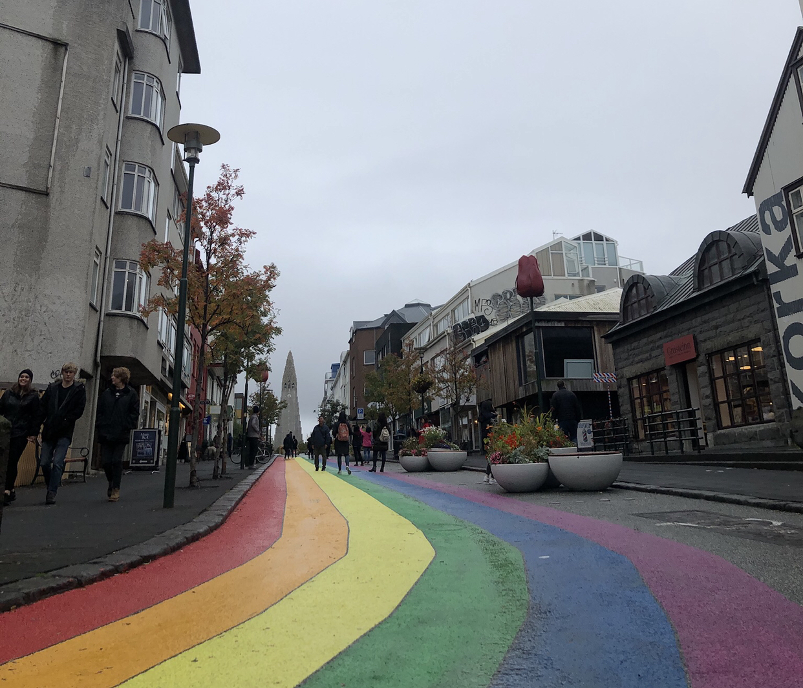

Reykjavik
Capital "Reykjavik"
でかいビルもなくて、人通りもめっちゃ少なかったです。日曜日やったからですかね。
それでも日本とは比にならないレベルで簡素な街でした。
街に出ている人達もほとんどが観光客だったんじゃないかなと思います。
Hallgrímskirkja(ハットルグリムス教会)は有名な観光地みたいだったので行ってみました。
入場は無料ですが、上に行くにはお金がかかりました。
どんな建物でも上に行く時ってお金かかりますよね笑 当たり前かもしれないですけど。
値段は忘れてしまいましたが、そんなに高くなかった気がします。
友達が知っていたので行ってみました。
プーチンやクリントン元大統領もここのホットドッグを褒めてたみたいです。
宇宙一美味しいホットドッグって言われてるみたいです。
めっちゃ夢ないこと言いますけど、普通のホットドッグです笑
シンプルに期待値が高すぎました笑 宇宙一なんか言われたら、、、
気になる方は是非行ってみて下さい！場所はシティーホールの近くです。
リンクも貼っておきますね。Bæjarins Beztu Pylsur(バイヤリンス・ベストゥ・ピルスル)
海外の国ってどこも共通して言えることですけど、トイレの数が少ないんですよね。
でもシティホールにはトイレありました！一個の情報としてここで言っておきます笑
リンク貼っておきますね。Reykjavik City Hall
平日は8:00~18:00, 土曜日は10:00~18:00, 日曜祝日は12:00~18:00みたいです。
写真は一緒に旅した友達です笑
そのことから写真のようなバイキング船の記念碑が、レイキャビークの北端に建てられています。
アイスランドは何もない島でしたが、アイルランドの修道士たちが住んでいたそうです。
そして、ノルウェーのバイキングたちが入植して文明を築いたみたいです。
色々あって、スェーデンに占領されたり、ノルウェーに占領されたりして、今に至るみたいです。
こんなに北欧人種が混ざったら、高身長で白髪で目が綺麗な目の人ばっかりでしょうね。
男性ならめっちゃゴツくて、女性ならスタイルいいみたいな笑
鎖国文化の強い日本人からすると興味深い歴史ですよね。
こんな風に思ってるのは僕だけかもしれないですけど笑

街中を散策するには丁度いい大きさの都市です。
アイスランドならではのお店でショッピングを楽しむこともできると思います。
この街では、オーロラを観るチャンスも充分にあります。ヘリコプターのツアーもあるみたいなので、
タイミングさえ合えば完璧なシチュエーションになるかもしれません。
小さい街ですが、ナイトライフも充実しているみたいです。
夜になるとバーやクラブに変わるレストランもあるとか。
個人的には、アイスランドの夜を楽しんだことがないので次回に期待ですね。
バーの雰囲気、お酒の種類、クラブでの音楽のジャンル、選曲。楽しみです笑
次行った時はその情報もブログに書ければと思ってます！